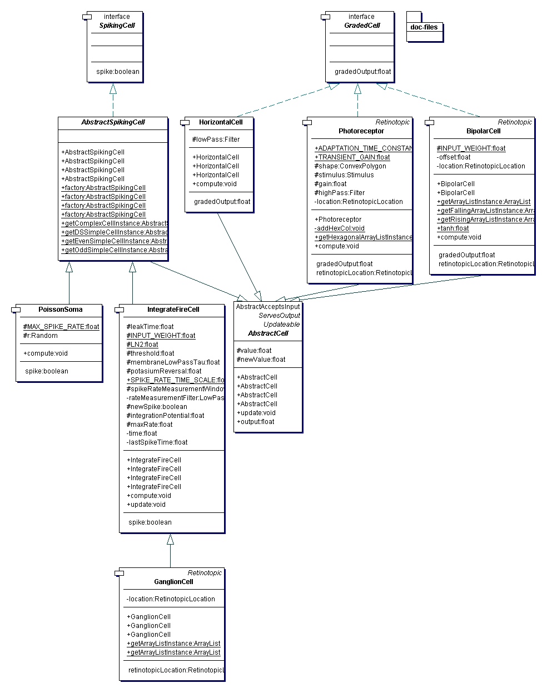

|
The Physiologist's Friend Simulation API | ||||||||
| PREV PACKAGE NEXT PACKAGE | FRAMES NO FRAMES | ||||||||
AbstractCell.
See:
Description
| Interface Summary | |
|---|---|
| GradedCell | A cell that produced a graded output. |
| SpikingCell | A cell that makes spike output. |
| Class Summary | |
|---|---|
| AbstractCell | Default implementations for all cells. |
| AbstractSpikingCell | Abstract class providing common methods for spiking cells. |
| BipolarCell | Implements a bipolar cell. |
| ColorPhotoreceptor | A color-selective photoreceptor. |
| GanglionCell | Represents a retinal ganglion cell. |
| HorizontalCell | Cell that averages the inputs and outputs the lowpass-filtered value. |
| IntegrateFireCell | Implementation of a spiking cell with an integrate-and-fire spike mechanism. |
| Photoreceptor | This class implements the notion of a photoreceptor. |
| PoissonSoma | A poisson spiking mechanism. |
This package contains specific cell types, which are subclasses of AbstractCell.
A cell usually references a collection of input cells or, more general, implementors of
ServesOutput (AbstractCell implements ServesOutput).
The Photoreceptor is special in that it takes a
Stimulus as its input. The photoreceptor can then ask what is its
excitation based on its shape. A cell provides its output through the ServesOutput interface to other cells.
In the context of the simulation, cells are the components that are simulated. The simulation requires its
components to implement Updateable, which provides the simulation
thread with the methods compute(float dt) and update(). The cell recomputes its
state on compute(float dt) but makes its new output available to other cells only on
update(). Inheriting the default implementations for this 'double-buffering' from
AbstractCell, a cell only needs to implement its own
computations in compute(float dt) and at the end of that method assign its new output
to the field newValue.
There are currently two types of cells: the first type implements GradedCell
and its output is its analog signal response; the second type implements
SpikingCell and its output is its spiking rate.
Current implementors of GradedCell are: Photoreceptor,
HorizontalCell and
BipolarCell.
Current implementors of SpikingCell are: AbstractSpikingCell and
its descendants IntegrateFireCell,
GanglionCell and
PoissonSoma.
AbstractSpikingCell provides a few factory methods to construct
cortical cells, namely:
Odd and even simple cells, which are (paradoxically) the most complicated cells to build, because they have
push-pull input from sets of retinal ganglion cells;
Complex cells and direction selective simple cells, which use simple combinations of basic simple cells
(note how they construct and add simple cells to the simulation for their own use).
All of these cells are instantiated in SimulationSetupFactory.
The package UML is

|
http://www.ini.unizh.ch/~tobi/friend | ||||||||
| PREV PACKAGE NEXT PACKAGE | FRAMES NO FRAMES | ||||||||